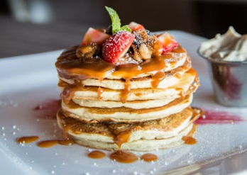

Pancakes!!
Make your mornings delightful with this easy-to-make pancake recipe! Whether you're cooking for yourself or your family,these pancakes are sure to impress.
Ingredients
- 1 cup all-purpose flour ,2 tablespoons sugar
- 2 teaspoons baking powder,1/2 teaspoon salt
- 1 cup milk, 2 tablespoons melted butter
- 1 egg, 1 teaspoon vanilla extract
Instructions
- In a large bowl,whisk together the flour,sugar,baking powder,and salt.
- In anotherbowl,mix the milk,melted butter,egg,and vanilla extract
- Pour the wet ingredients into the dry ingredients and stir until just combined.
- Heat a lightly oiled griddle or frying pan over medium-high heat.
- Pour or scoop the batter onto the griddle,using approximately 1/4 cup for each pancake.
- Brown on both sides and serve hot with your favourite toppings.
Tips
For fluffier pancakes,let the batter sit for a few minutes before cooking.You can also add blueberries,chocolate chips,or bananas to the batter for a delicious twist!
Nutritional Information